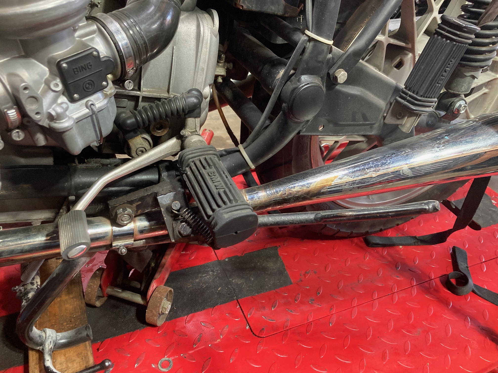
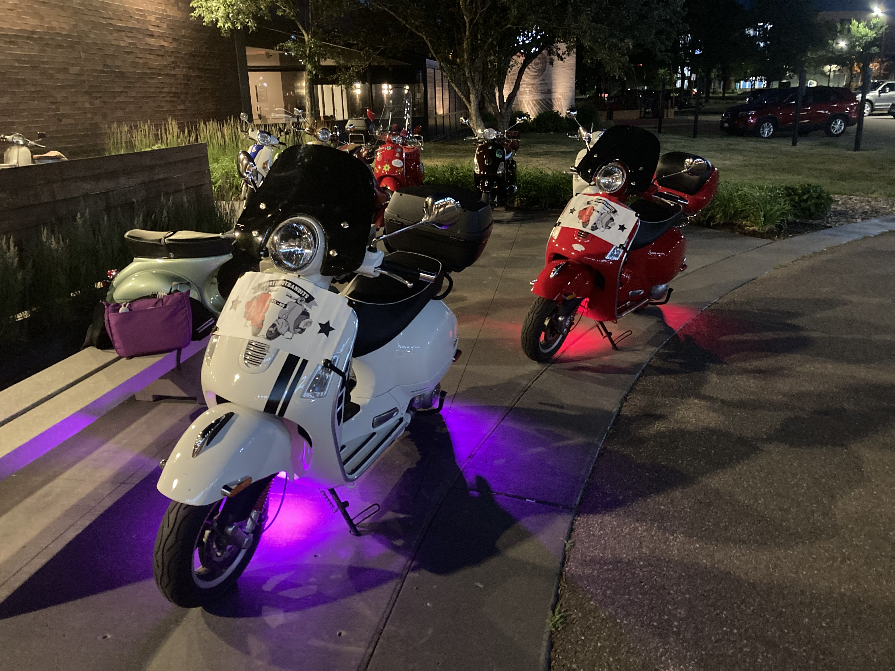
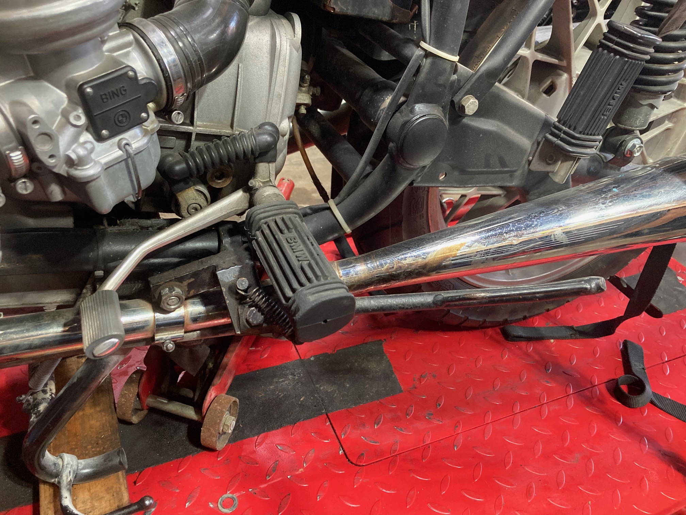
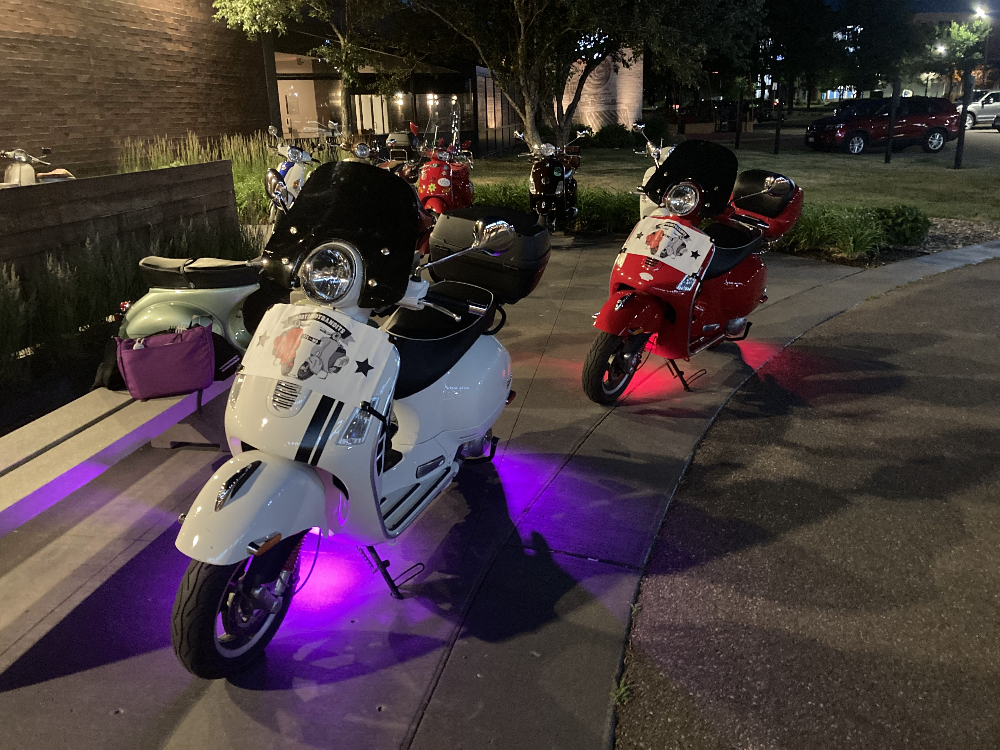

There are two kinds of riders: those who want to understand how everything works and be able to fix it themselves, and those who just want to ride. If you find yourself more interested in riding than wrenching, you’ve come to the right place. As a motorcyclist and scooterist who falls firmly in the first camp, I take great pride in helping other riders get back on the road so they can enjoy their hobby. When you’ve got a motorcycle or scooter that isn’t running right (or at all), contact me to find out what it might take to get you back in the saddle. With more than 15 years of experience, The Bike Knight can help you get back to what you love—RIDING!
Ryan "Sir Manley" has been riding BMW motorcycles all his life. As an 11-month-old he rode in a sidecar attached to an R50/2 . As soon as his feet were long enough to touch the pegs, he was riding on the back of his dads R100/7. At the age of 15 he started riding his own bike a 1975 R60/6. At that point he started his lifelong journey of working on bikes. In 2007 Ryan was on of the inaugural mechanics when Gateway BMW Motorcycles first opened its doors. Once there he quickly obtained his Master BMW Technician certification. Other certifications from Husqvarna, Motus Vectrix would follow. Within a few years there Ryan became the Shop Foreman and eventually the Service manager. Sir Manley has specialized in the 12v electrical accessories such as auxiliary lights and audio systems. He has also completed several frame-up restorations, project bikes and Café Racers. In 2012 he fell in love with vintage Vespa scooters. Since then, he has revived several vespas with new wiring, engine rebuilds and engine upgrades. This led him to own and work on modern twist-and-go scooters like his favorite Yamaha’s Vino 125.

 



For inquiries and appointments, please reach us at SirManley@bikeknight.net
Try the Vespa Gearing Calculator